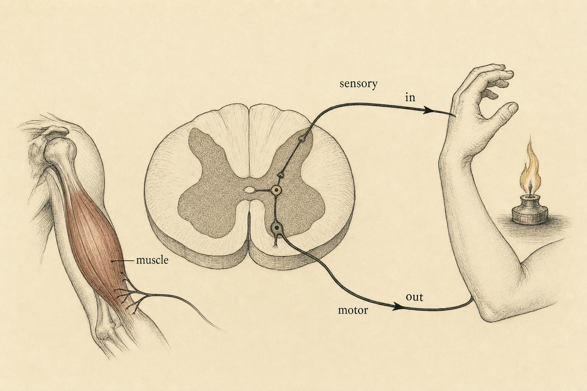

Wiring the Body: One System, Two Territories
How billions of single neurons resolve into a body-spanning network with a clear division of labor.
You rest your palm on a stovetop, not realizing a burner is still glowing. Before you feel anything, before the word "hot" has any meaning, before you decide anything at all, your hand is already gone. It has snapped back, fast and clean, and only then does the pain arrive, along with a startled sound you did not plan to make. The order of events is the surprising part. Your body moved to protect itself and left your conscious mind to catch up.
That half-second reveals the architecture of the entire nervous system in miniature. A signal came in, got processed somewhere, and a command went out, and the "somewhere" was not your brain. In the last chapter we watched a single neuron fire. This chapter zooms out to ask the harder question: how do billions of those firings organize into a system that can pull your hand off a stove faster than you can think? The answer is a map, and once you have it, every later topic in this course has a home on it.
Throughout this chapter you will follow one learner, Lena, a 29-year-old who signed up for this course after an afternoon in a hospital waiting room. Her grandmother had taken a fall, and a neurologist worked through a bedside exam: a small rubber hammer tapped just below the kneecap, then at the ankle, then a light touch traced along the sole of the foot. Lena watched her grandmother's leg kick out on its own, almost before the doctor had finished asking whether she could feel the tap at all, and could not work out what a twitching leg had to do with a fall and a bump on the head. Was the hammer testing the brain? If it was, why did the leg move before her grandmother even answered the question out loud? Lena is not a patient in this chapter and she is not a case to be solved. She is a stand-in for an honest, common confusion about where the nervous system actually does its thinking, and by the end of this chapter you will be able to answer her question more precisely than she could that afternoon. Her story is a thread we will pick up again, not a diagnosis, and we will be careful about that difference the whole way through.
From one neuron to a nation of them
A single neuron is a beautifully simple device: it collects inputs, and if they cross a threshold, it fires an all-or-nothing pulse down its axon. But one neuron in isolation does nothing useful, just as one telephone is not a phone network. The interesting behavior, sensing, deciding, moving, remembering, emerges only when neurons are organized. And the organizing principle is not random. Nervous systems everywhere obey a division of labor between places where signals are integrated and places where signals merely travel.
Scale makes the design problem vivid. Estimates place the number of neurons in the human nervous system in the tens of billions, and depending on how liberally you count supporting cells, the total climbs past one hundred billion. A system built from that many individual units cannot possibly have every unit talk to every other unit; the wiring cost alone would be unworkable. Instead, the vast majority of neurons connect only to their close neighbors, and a comparatively small set of long-range projections carry information between distant regions, the biological equivalent of local streets feeding onto a handful of highways. The CNS concentrates the intersections; the PNS supplies the on-ramps and off-ramps to the rest of the body.
This division of labor was not obvious to the scientists who first looked at nervous tissue under a microscope. For decades, two rival camps disputed whether the nervous system was one continuous, spliced-together web, the reticular theory, or a collection of individually bounded cells that merely communicate across tiny gaps, the neuron doctrine. Santiago Ramon y Cajal's meticulous staining and drawings, and later Sherrington's physiological experiments, settled the argument in favor of discrete cells signaling across junctions Sherrington himself named synapses. That resolved dispute matters here because the CNS/PNS map only makes sense once you accept that the nervous system is built from separable, individually replaceable units rather than one continuous net. Territories, boundaries, and handoffs are only meaningful concepts if the underlying wiring is genuinely made of distinct parts.
Anatomists carve the human nervous system into two great territories. The central nervous system (CNS) is the brain and the spinal cord. The peripheral nervous system (PNS) is everything else: the cranial and spinal nerves, the branching cables that reach every muscle fiber, every gland, and every square centimeter of skin. Bear, Connors, and Paradiso (2026) put the intuition plainly: the CNS is where decisions get made, and the PNS is the wiring that carries information to and from those decisions.
It is tempting to treat this as a fact to memorize for an exam. Resist that. Think of it instead as information architecture. Any large signaling system faces the same design problem a company or a city does: you cannot integrate everything everywhere. Integration, weighing many inputs against one another to produce a coherent output, is expensive and needs to happen in protected, well-connected hubs. Relay, moving a signal reliably from point A to point B, needs to happen everywhere else, cheaply and fast. The CNS/PNS split is that solution, written in tissue.
A useful comparison is a national power grid. A handful of generating stations do the genuinely hard work of converting fuel into electricity and balancing supply against demand from moment to moment. Everything downstream of that, the transmission towers, the substations, the wires running into a kitchen, exists purely to carry current where it is needed without adding any intelligence of its own. Damage a substation and one neighborhood goes dark. Damage a generating station and the whole grid is in trouble. The nervous system is built on the same logic, and it explains, before we even open an anatomy atlas, why an injury to a peripheral nerve and an injury to the spinal cord carry such different weight.
Why the center is protected and the periphery is not
Notice how differently the two territories are treated by the body. The CNS is sealed inside bone, the skull and the vertebral column, and floated in cerebrospinal fluid, wrapped in three protective membranes, and guarded by a selective blood-brain barrier. The PNS gets none of this. Its nerves run through muscle and under skin, exposed, repairable but vulnerable. This asymmetry is a tell. We armor what we cannot afford to lose and what cannot easily be rebuilt: the integration machinery. Peripheral axons can regrow after injury; central circuits largely cannot. The architecture reflects the value of what each region does.
The boundary is real and physical. Central axons are wrapped in myelin made by oligodendrocytes; the moment an axon exits the cord and joins a peripheral nerve, its myelin is made by a different cell, the Schwann cell. The handoff happens at a discrete transition zone. So even at the cellular level, the map is not a metaphor. The body itself draws the line between center and periphery.
The three protective membranes named earlier are worth knowing by name, because you will meet them again when this course covers injury and infection. The tough outer dura mater sits just inside the skull and vertebral column, the delicate arachnoid mater lies beneath it, and the thin pia mater clings directly to the surface of the brain and cord, with cerebrospinal fluid circulating in the space between the arachnoid and the pia. No equivalent three-layer wrapping exists around a peripheral nerve, which instead relies on simpler connective-tissue sheaths, an outer epineurium around the whole nerve, a perineurium around bundles of fibers inside it, and an endoneurium around each single fiber, built for flexibility and repair rather than for defense against penetration.
Traffic has a direction: afferent and efferent
Now that we have two territories, we need to describe the traffic between them. Here is the single most useful vocabulary in this entire course, and it pays off in every chapter to come. Signals move in exactly two directions relative to the central nervous system.
Afferent traffic travels toward the CNS. It is incoming, sensory information: the pressure on your palm, the stretch in a muscle, the fullness of your gut, the light on your retina. Afferent means "carrying to."
Efferent traffic travels away from the CNS. It is outgoing, motor command: the instruction to contract a muscle, secrete a hormone, or speed up the heart. Efferent means "carrying from."
A memory hook that actually holds: afferent = arriving, efferent = exiting. Once this pair is automatic, the rest of the nervous system becomes legible. The entire sensory side of this course (Chapter 6) is the afferent story; the entire motor side (Chapter 7) is the efferent story. Everything is either coming in to be integrated or going out to be executed.
It helps to notice what this vocabulary is not about. Afferent and efferent describe direction only, not importance, not pleasantness, and not whether a signal reaches conscious awareness. A painful signal and a pleasant one can both be afferent. A command to blink and a command to sprint are both efferent. The words are strictly about which way a signal is traveling relative to the CNS, the same way a sign on a highway says northbound or southbound without commenting on the cargo in the truck.
If you sorted "gut fullness" as afferent and "heart speeding up" as efferent, you were tracking direction correctly. Both are on the autonomic side, but one is a sensation arriving and one is a command departing. That is exactly the discrimination the vocabulary is built for.
This is also a good moment to notice a detail that will matter later: a single event in the body can generate traffic in both directions at once. When your heart speeds up before a race, an efferent autonomic signal is driving the increase, but afferent signals from stretch receptors in the heart and vessels are simultaneously reporting the new state back to the brainstem, which uses that feedback to keep the adjustment from overshooting. Afferent and efferent are rarely a single one-way trip. More often they form a closed loop: information goes out, and a report on the results comes back in, running continuously and mostly outside your awareness.
A single cable can carry both directions
It is worth clearing up one more point of confusion before moving on. A single peripheral nerve is very often a mixed cable: afferent and efferent axons bundled together inside the same connective-tissue sheath, running side by side without interfering with each other, the way a single trunk road can carry lanes of northbound and southbound traffic. Most spinal nerves and many cranial nerves are mixed in exactly this way, carrying sensory fibers from skin and muscle alongside motor fibers heading to muscle, all inside one visible cord of tissue. Afferent and efferent, in other words, describe the direction of an individual axon's traffic, not a property of the whole nerve it travels in. When a nerve is severed, both directions of traffic through that cable are interrupted at once, which is part of why a single peripheral nerve injury can produce both numbness, lost afferent traffic, and weakness, lost efferent traffic, in the same patch of body at the same time.
The reflex arc: the whole system in miniature
We now have enough vocabulary to trace a complete loop from stimulus to action, and the cleanest example is the one we started with: yanking your hand off a hot stove. Charles Sherrington, whose 1906 monograph The Integrative Action of the Nervous System essentially founded this way of thinking, treated the reflex arc as the simplest possible unit of nervous integration. Study the reflex, he argued, and you study the nervous system's logic in its most stripped-down form (Sherrington, 1906).
Here is the loop, component by component:
1. The sensory receptor. Specialized endings in your skin transduce the stove's heat into an electrical signal. This is where the physical world becomes neural information, the same transduction step that, in Lena's grandmother's exam, turned a rubber hammer's tap into a stretch signal inside a muscle.
2. The afferent (sensory) neuron. That signal races up a sensory axon toward the spinal cord. It enters through the dorsal (back) side of the cord, a consistent architectural rule Purves and colleagues (2018) call the dorsal root: sensation always enters the back door.
3. The interneuron. Inside the spinal cord, the incoming signal meets an interneuron, a short-range connector cell that lives entirely within the CNS. This is where integration happens, locally, in the cord, not in the brain. The interneuron is the decision-maker of the reflex.
4. The efferent (motor) neuron. The interneuron activates a motor neuron whose axon exits through the ventral (front) root: commands always leave the front door. This axon runs back out to the arm.
5. The effector (muscle). The motor command reaches the biceps, it contracts, and your hand withdraws.
Sensory in the back, motor out the front, an interneuron doing the thinking in between, this is the entire nervous system's floor plan, compressed into a circuit you can trace on one hand.

The punchline: your cord acts before your brain knows
Here is the detail that startles most learners. In the classic withdrawal reflex, the brain is not in the loop that pulls your hand away. The signal enters the cord, an interneuron fires the motor neuron, and the hand withdraws, all within roughly a tenth of a second. Meanwhile, a separate branch of the sensory signal is still climbing the cord toward your brain, where it will eventually register as pain. By the time you consciously feel "ouch," the protective movement is already complete. The cord acted; the brain was merely informed.
The gain is speed. Every synapse a signal must cross adds delay, and every extra centimeter of axon adds travel time. Routing tissue-damage responses through the nearest integration point, the cord, shaves off the round trip to the brain and back. What you give up is nuance: a spinal reflex cannot weigh context ("but I'm holding a newborn"). That is why the brain retains the power to modulate reflexes after the fact. The two-tier design gets you both a fast local reflex and a slower, wiser central override.
One reflex rarely travels alone
The withdrawal reflex just traced does not usually travel by itself. Step barefoot on a tack and the leg that was struck flexes and lifts, exactly as described, but at almost the same instant the opposite leg extends and stiffens to take your full weight, so that you do not simply collapse onto the injured foot. Physiologists call this pairing the crossed extensor reflex, and it depends on interneurons that cross the midline of the spinal cord to activate extensor motor neurons on the opposite side while the flexor side is busy withdrawing. It is a small but telling detail: the cord is not running one isolated circuit at a time, it is coordinating multiple limbs against each other in a single, brief burst of local computation, all before the brain has any say in the matter. Sherrington's original experiments relied heavily on exactly this kind of paired, reciprocal reflex to make his case that the spinal cord performs real integration rather than simple relay (Sherrington, 1906).
The timer is not a gimmick. Human withdrawal reflexes complete in roughly 100 to 150 milliseconds, while the conscious perception of pain lags noticeably behind it: your movement genuinely does precede your "ouch." Sherrington measured phenomena like this in decades of careful spinal experiments, and a century later, Burke (2006) marveled in a centenary review that his conclusions about reflex integration have "hardly needed revision."
This is also the answer Lena was reaching for in that hospital room. A reflex test does not measure whether someone can think. It measures whether a specific, local, testable circuit, receptor to afferent neuron to (in some reflexes) interneuron to efferent neuron to muscle, is intact. A brain injury and a nerve injury can produce very different reflex findings, which is exactly why the test is useful: it helps separate the two territories of the map from each other in a way a general conversation cannot. We will come back to what this means for Lena specifically at the end of the chapter.
The spinal cord is not just a cable
For most of the twentieth century, textbooks described the spinal cord as a superhighway, a bundle of ascending afferent tracts and descending efferent tracts, relaying traffic between brain and body but doing no real thinking of its own. The reflex arc already dented that picture: the cord clearly decides in the withdrawal reflex. But recent work has demolished the "passive cable" model entirely.
Stachowski and Dougherty (2021) show that the cord is full of inhibitory interneurons acting as gatekeepers, filtering out extraneous sensory signals, sharpening relevant ones, and routing information either to motor output or up to the brain. This is active editing, not passive relay. Meanwhile Grau and colleagues (2024), reviewing fifty years of evidence, argue that the isolated spinal cord can coordinate rhythmic behavior, process relationships between stimuli, and even support forms of plasticity that look like learning "below the brain." The cord, in other words, is a local decision-maker with a memory, not a dumb wire.
This matters for how you hold the whole map in your head. The CNS/PNS split tells you where integration is concentrated, but it does not mean integration happens only in the brain. Integration is graded: the cord does fast, local, reflexive integration; the brain does slow, contextual, deliberate integration. Asan and colleagues (2022) frame skilled movement itself as the continuous marriage of afferent input and efferent output, sensory-motor integration distributed across cord, cerebellum, and cortex working together. Keep that nuance; you will need it when we reach motor control in Chapter 7.
A vivid illustration of this graded integration is locomotion itself. Walking feels like a decision the brain makes and then executes, but much of the rhythmic, alternating pattern, left leg, right leg, left leg, is generated by circuits within the spinal cord known as central pattern generators. The brain's job is closer to a supervisor's: it decides to start walking, steers around obstacles, and adjusts speed, while the cord handles the repetitive, moment-to-moment choreography of the stepping cycle itself. Classic animal studies, going back to Thomas Graham Brown's work in the early twentieth century, showed that a spinal cord isolated from the brain and from most sensory input could still produce coordinated, alternating stepping movements, a striking demonstration that the wiring for the pattern lives in the cord, not only in the cortex.
The cord's local intelligence is organized segment by segment. Thirty-one paired spinal nerves exit along its length, eight cervical, twelve thoracic, five lumbar, five sacral, and one coccygeal, and each segment has its own strip of skin, called a dermatome, and its own set of muscles, called a myotome, that it primarily talks to. This segmental map is precisely what lets a clinician translate a reflex or sensory finding into a location: an intact knee jerk points to an intact loop through the second, third, and fourth lumbar segments, an intact ankle jerk points to the first and second sacral segments, and so on. The map built across this chapter, territory, direction, and now segment, is the same map a neurological exam is silently drawing in real time.
The nervous system, regarded in one aspect, is a machine for effecting coordination, and the reflex is the unit reaction of this machine.
Charles S. Sherrington, The Integrative Action of the Nervous System (1906)
A preview: the peripheral system splits in two
We close by planting a seed that Chapters 4 and 5 will grow. The efferent (outgoing) side of the peripheral nervous system is not one thing, it forks into two functional divisions with very different jobs.
The somatic division carries voluntary commands to skeletal muscle. When you decide to lift your coffee, type a sentence, or wiggle a toe, that command travels the somatic route. It is the pathway of deliberate, "I meant to do that" movement, and it terminates on the muscles you can consciously control.
The autonomic division runs the machinery you don't consciously drive: heart rate, digestion, pupil size, sweat, blood-pressure adjustments. It commands smooth muscle, cardiac muscle, and glands, and it works largely without your awareness or consent. When your heart sped up before a race in the Signal Router exercise, that was an autonomic efferent command. The autonomic division itself splits again, into the sympathetic ("fight or flight") and parasympathetic ("rest and digest") branches, but that is the story of the next two chapters (Kandel et al., 2021).
Autonomic organs usually answer to both branches
One more preview detail worth planting now: most organs under autonomic control receive input from both the sympathetic and parasympathetic branches at once, not one or the other in isolation. The heart, for instance, has sympathetic fibers that speed it up and parasympathetic fibers, traveling in the vagus nerve, that slow it down, both running to the same tissue simultaneously and continuously. Heart rate at any given moment is not a switch thrown one way or the other; it is the net balance of two efferent commands pulling in opposite directions at once, adjusted second by second. This dual-innervation pattern shows up again and again once Chapters 4 and 5 arrive, and it is the physiological reason a calm state is rarely an on/off condition. It is a shifting balance point between two efferent streams that never fully switch off.
For now, fix the shape of the map in mind. One nervous system, two territories (central and peripheral). Traffic runs in two directions (afferent in, efferent out). The efferent side serves two masters (somatic and autonomic). Every mechanism in the rest of this course, neurotransmitters at the junctions, sensory streams, motor commands, the orchestration of sleep, lives at a specific address on this map. You now have the map. The rest is filling it in.
Where this understanding stops
Before we close, we need to name the frame that governs this entire course, because it shapes what these chapters are for and what they are not. This is education, not diagnosis. We explain the architecture of the nervous system, and we point toward qualified clinicians when a real body and a real symptom are involved. We do not diagnose, treat, or manage disease, in a learner or in anyone else.
That boundary matters here more than it might seem, because this chapter comes closer to clinical territory than most introductory material does. Reflex testing, the split between sensory and motor findings, and the division between central and peripheral function are exactly the tools a neurologist uses at a bedside to localize an injury within minutes, sometimes before any imaging is available. Understanding why a reflex hammer tests the cord and not the cortex is genuinely useful knowledge. Using that knowledge to interpret a real person's real exam, your own or someone else's, is a different act entirely, and it is not one this course licenses.
The distinction is not legal boilerplate. A weak or absent reflex, a patch of numbness, or a delayed reaction time can have dozens of possible explanations ranging from trivial to urgent, and telling them apart requires a full clinical exam, a history, and often testing that a course cannot provide and a learner cannot substitute for. Someone who has learned this chapter's map can ask better questions of a clinician. They cannot use the map to replace one.
Consider how this plays out with a symptom this chapter has said almost nothing about: numbness. A learner who has absorbed this chapter correctly might notice that numbness in a hand could, in principle, reflect trouble anywhere along an afferent pathway, at the receptor, the peripheral nerve, the point of entry at the cord, or further up the chain toward the brain. That is a genuinely useful piece of architecture to carry around. It is not, and was never meant to be, enough information to decide which of those locations is the actual cause in a specific person, or how urgent it is. The map narrows the kind of question worth asking a clinician. It does not answer the question itself.
Hold onto why this boundary is protective rather than limiting. The map you now carry, central and peripheral, afferent and efferent, a reflex arc that resolves in the cord, is powerful precisely because it explains mechanism without pretending to replace judgment. Knowing where your understanding ends is not a weakness in this field. It is the single most professional habit you can take out of this course, and it is exactly the habit that let Lena's question that afternoon stay a genuine question rather than curdle into a guess.
Case study: Lena and the hammer that was not testing the brain
Run Lena's afternoon through the map we have built and the confusion resolves, not into a diagnosis of her grandmother, which is not this course's business and was never Lena's question, but into an accurate account of what a reflex test is for. The knee jerk and ankle jerk the neurologist checked are stretch reflexes: a brief tap stretches a tendon, an afferent signal enters the spinal cord, and in these particular reflexes the sensory neuron synapses close to directly onto the motor neuron, a short, largely two-neuron loop that sources describe as monosynaptic (Kandel et al., 2021; Purves et al., 2018). It is even more local than the withdrawal reflex traced earlier in the chapter, which routes through an interneuron because coordinating a limb pull needs more than one muscle group. Both circuits share the same underlying logic: sensory in, processed at the level of the cord, motor out, no trip to the brain required for the movement itself.
That is exactly why a clinician reaches for a reflex hammer in the first place. A normal, brisk reflex tells the examiner that a specific loop, the peripheral sensory nerve, the entry point at the cord, the local circuit, the peripheral motor nerve, the muscle, is functioning end to end, without needing the patient to understand a question or form a verbal answer. An absent or exaggerated reflex points toward a problem somewhere along that specific loop, and where along the loop it points depends on which other reflexes and sensations are affected alongside it. This is the CNS/PNS map and the afferent/efferent vocabulary being used exactly as designed: to localize function to a territory and a direction, quickly, at a bedside, using nothing more than a small hammer and a few seconds. It is also why a normal reflex exam and a person's ability to hold a conversation are separate pieces of information. One probes the cord and peripheral nerves; the other draws heavily on the brain. A clinician wants both, because together they narrow down where in the architecture a problem is most likely sitting.
The segmental map introduced earlier in the chapter is what makes this kind of testing so efficient. A knee jerk and an ankle jerk are not interchangeable; they sample different segments of the cord, so checking both, alongside sensation at different points on the leg, lets an examiner triangulate a likely level far faster than a general conversation ever could. This is also, incidentally, why a neurologist rarely tests only one reflex. A single data point can be misleading; a pattern across several segments and several modalities, reflexes, sensation, strength, is what turns a hammer tap into genuinely useful information rather than a guess.
None of this tells us anything about Lena's grandmother specifically, and it should not. What it gives Lena, and what it gives you, is the ability to watch a bedside exam and understand its logic instead of its mystery: a reflex hammer is not testing whether someone can think, it is testing whether a specific, mappable circuit between the spinal cord and a muscle is intact, and that is a question the architecture in this chapter answers directly. Lena did not leave this course with an explanation for her grandmother's fall. She left with the ability to recognize, the next time a clinician taps a knee, exactly what kind of question is being asked, and exactly whose job it is to answer it.
It is worth naming what Lena actually walked away with, because it is the real deliverable of this chapter. She did not leave with a diagnosis, a prognosis, or a verdict on her grandmother's condition. She left with a working model of the architecture: central versus peripheral, afferent versus efferent, a reflex arc that resolves locally in the cord, and a segmental map that turns a hammer tap into a location rather than a mystery. That is not a smaller outcome than the explanation she originally wanted. It is a sturdier one, because it does not depend on guessing at a diagnosis that was never hers to make. A learner who understands the architecture asks better questions of the person whose job it actually is to answer them.
Key Takeaways
- The nervous system divides into the central (brain and spinal cord, where integration is concentrated and heavily protected by bone) and the peripheral (the nerves that relay signals to and from every muscle, organ, and patch of skin).
- Signal traffic has direction relative to the CNS: afferent = arriving (sensory, incoming) and efferent = exiting (motor, outgoing). This vocabulary organizes every later chapter and describes direction only, never importance.
- The reflex arc, receptor to sensory neuron to interneuron to motor neuron to muscle, is the smallest complete signaling loop, with sensation entering the dorsal (back) root and commands leaving the ventral (front) root. Some reflexes, like the knee jerk, skip the interneuron entirely for an even faster, more local loop.
- In protective reflexes the spinal cord acts before the brain knows: withdrawal completes in roughly 100 to 150 ms while the pain signal is still climbing toward conscious awareness.
- The spinal cord is an active local decision-maker, full of gatekeeping inhibitory interneurons and capable of generating rhythmic patterns like stepping, not a passive relay cable.
- The efferent PNS forks into the somatic (voluntary skeletal muscle) and autonomic (automatic organs and glands) divisions, previewing Chapters 4 and 5; neither is a single master switch for the whole nervous system.
- This is education, not diagnosis. Reflex testing and territory mapping explain mechanism; interpreting a real exam belongs to a qualified clinician.
We have drawn the roads, but we haven't yet asked how signals cross the gaps between neurons. In Chapter 3 we zoom back in to the junctions on this map, the synapses, and meet the chemical messengers that decide whether a signal continues, stops, or changes character. Every one of them acts somewhere on the architecture you just built.
References
Asan, A. S., McIntosh, J. R., & Carmel, J. B. (2022). Targeting sensory and motor integration for recovery of movement after CNS injury. Frontiers in Neuroscience, 15, 791824. https://doi.org/10.3389/fnins.2021.791824
Bear, M. F., Connors, B. W., & Paradiso, M. A. (2026). Neuroscience: Exploring the brain (5th ed.). Jones & Bartlett Learning.
Burke, R. E. (2006). Sir Charles Sherrington's The integrative action of the nervous system: A centenary appreciation. Brain, 130(4), 887-894. https://doi.org/10.1093/brain/awm022
Grau, J. W., Hudson, K. E., Johnston, D. T., & Partipilo, S. R. (2024). Updating perspectives on spinal cord function: Motor coordination, timing, relational processing, and memory below the brain. Frontiers in Systems Neuroscience, 18, 1184597. https://doi.org/10.3389/fnsys.2024.1184597
Kandel, E. R., Koester, J. D., Mack, S. H., & Siegelbaum, S. A. (2021). Principles of neural science (6th ed.). McGraw Hill.
Purves, D., Augustine, G. J., Fitzpatrick, D., Hall, W. C., LaMantia, A.-S., Mooney, R. D., Platt, M. L., & White, L. E. (2018). Neuroscience (6th ed.). Oxford University Press.
Sherrington, C. S. (1906). The integrative action of the nervous system. Yale University Press.
Stachowski, N. J., & Dougherty, K. J. (2021). Spinal inhibitory interneurons: Gatekeepers of sensorimotor pathways. International Journal of Molecular Sciences, 22(5), 2667. https://doi.org/10.3390/ijms22052667